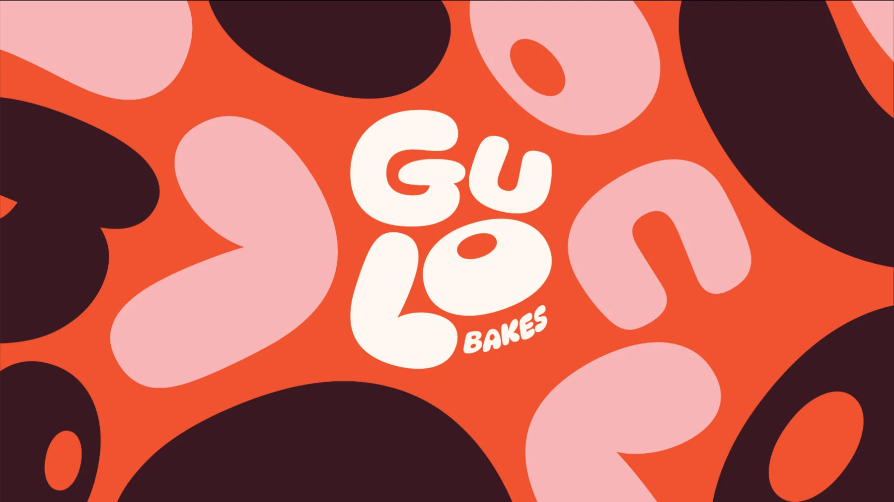
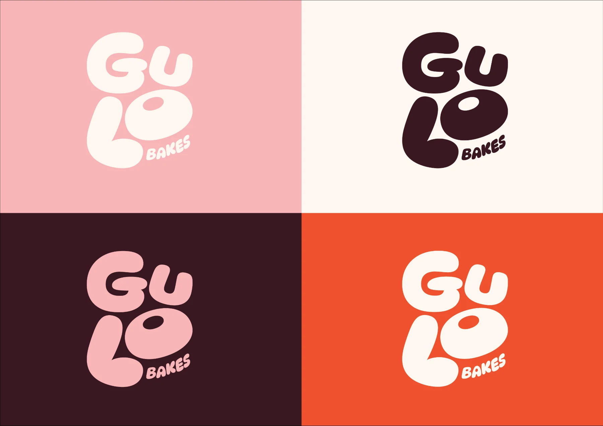
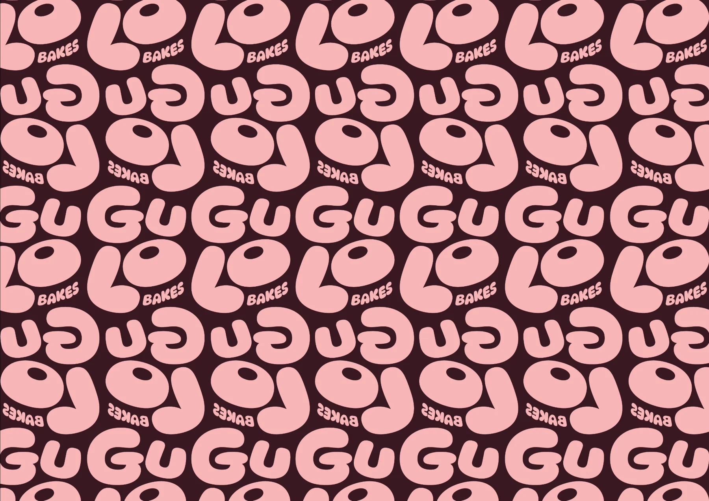
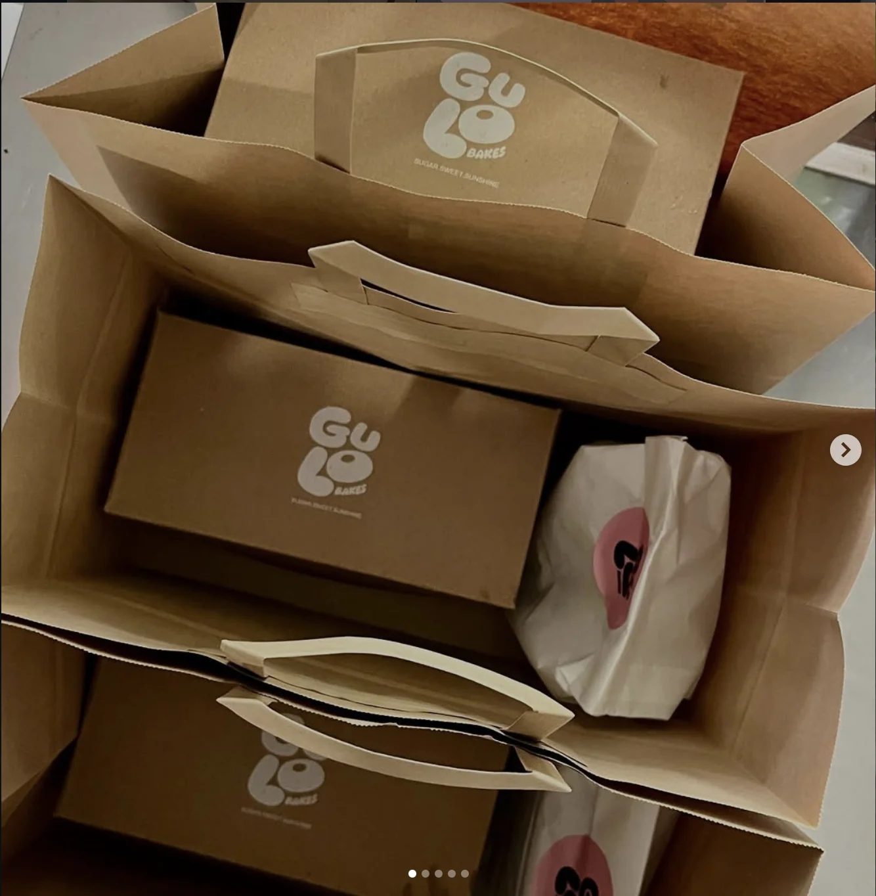
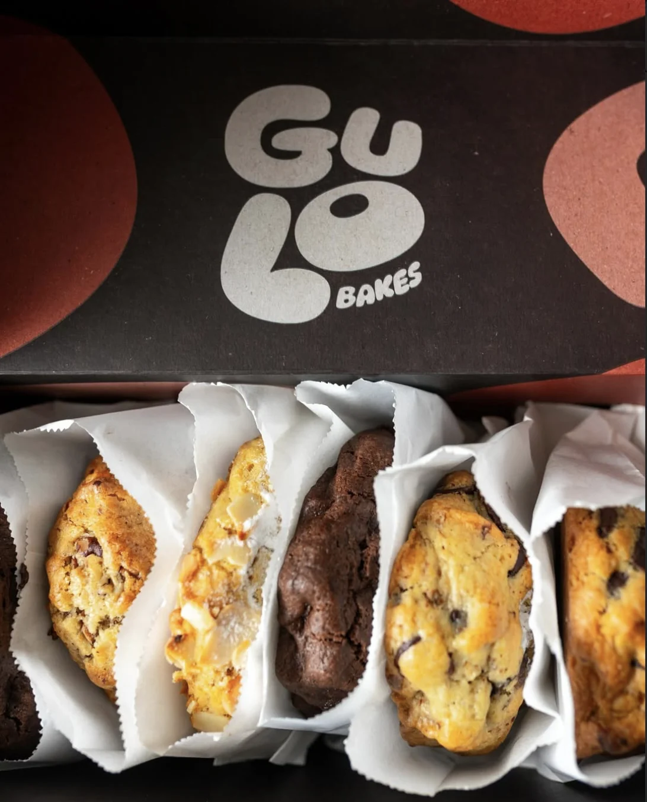
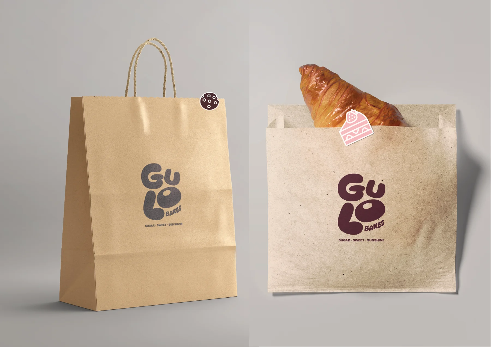
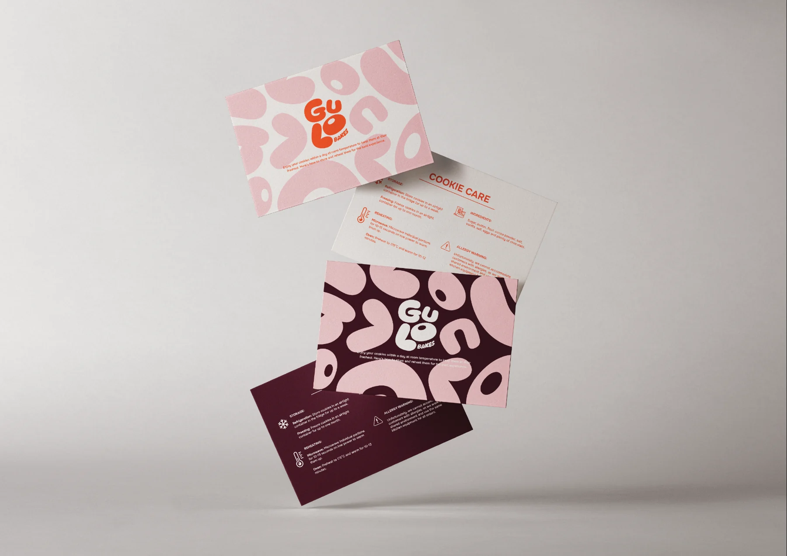

Gulo Bakes
Visual identity
Identity · Packaging · Social applications
A bakery identity,
shaped by dough.


The letterforms do the work.
Soft, rounded letters take their shape from dough. Repeated, cropped and rearranged, they become the pattern on the packaging. The wordmark gives the wider identity its own visual language.
- Brown SugarIngredient
- Sweet PinkFlavour
- Orange SunshineExperience


Printed. Packed.
The identity on Gulo’s boxes and bags, photographed in use.


From box to feed.
Boxes, bags, cards and social layouts use the same letters and colours. The composition changes; the identity stays recognisable.


Have an identity project in mind?
Tell us about it.